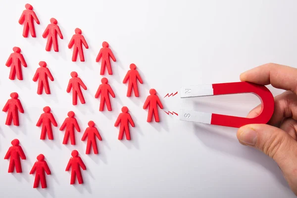

How a website generates leads while you work

The problem with referral-only growth
Referrals are one of the best sources of new business. They come in warm, they convert at a high rate, and they tend to trust you before the first conversation. There is no argument against building a strong referral network.
The problem is that referrals are entirely passive. You cannot control when they come in, how many you get, or whether they will be enough to hit your growth targets in any given month. Businesses that rely exclusively on referrals live in a constant feast-or-famine cycle that makes planning, hiring, and scaling almost impossible.
A well-built website solves this problem by creating an active, always-on lead generation channel that you can actually control and optimize over time.
What lead generation actually means
Lead generation is the process of attracting people who have a specific need and guiding them toward expressing interest in your solution. In practice, this means getting the right people to your website, giving them enough information to feel confident in reaching out, and making it as easy as possible for them to take that step.
Every element of a lead-generating website serves one of those three functions. The SEO strategy brings the right people in. The content builds confidence. The design and calls to action remove friction from the next step.
When all three work together, you have a system that generates inquiries, consultation requests, and sales conversations without you having to manually do anything to initiate them.
SEO: the foundation of inbound traffic
Search engine optimization is the practice of structuring your website so that it appears in Google search results when people are looking for what you offer. This is not a technical luxury. For most businesses, it is the primary way new customers who have never heard of you will find you.
Effective SEO starts with understanding what your potential customers are actually searching for. Not the industry jargon you use internally, but the plain-language phrases they type into Google when they have a problem you can solve. Building content around those phrases is how you earn visibility in search results.
Over time, good SEO compounds. Each piece of content you publish, each page you optimize, and each backlink you earn adds to your site's authority. A site with two years of solid SEO work behind it attracts traffic consistently and with very little ongoing cost per lead. The economics of organic search traffic are fundamentally different from paid advertising, which stops the moment you stop paying.
The anatomy of a website that converts
Traffic alone does not pay the bills. A website needs to convert visitors into leads, and that requires specific design decisions.
The first is clarity. A visitor should know within five seconds of landing on your page what you do, who you do it for, and what they should do next. Vague headlines, cluttered layouts, and buried contact information all increase the likelihood that a visitor leaves without taking any action.
The second is trust. Social proof in the form of testimonials, case studies, client logos, or portfolio work tells the visitor that other people have trusted you and it worked out. This is especially important for service businesses where the customer is essentially buying a promise before they can see the outcome.
The third is a clear call to action. Every page of your website should have an obvious next step for the visitor. Whether that is booking a consultation, downloading a resource, or submitting a contact form, that action needs to be visible, prominent, and frictionless.
Content that attracts and qualifies leads
Content marketing is one of the most effective long-term lead generation tools available to small businesses. When you publish genuinely useful content that addresses the questions your potential customers are asking, several things happen simultaneously.
First, you attract organic traffic from people who are actively researching the problem you solve. Second, you demonstrate expertise, which accelerates trust-building significantly. Third, you naturally filter for high-quality leads because someone who has read three of your blog posts before reaching out already understands your approach and your value.
Content does not need to mean a massive publishing operation. For many small businesses, a consistent output of one to two quality pieces per month is enough to build meaningful search visibility over 12 to 18 months. The key word is quality. Content that genuinely informs and helps the reader will always outperform thin, keyword-stuffed content that exists only to game search rankings.
Capturing leads before they are ready to buy
Not every visitor to your website is ready to hire you today. Some are in the early research phase. Some are comparing options. Some are simply curious. A website that only converts the people who are ready to buy immediately is leaving a significant amount of potential revenue on the table.
Lead capture mechanisms like newsletter signups, free resources, and consultation offers allow you to stay in contact with people who are interested but not yet committed. Over time, consistent communication through email nurtures those contacts until they are ready to make a decision and when they are, you are the business they already have a relationship with.
This is how businesses that understand lead generation consistently outperform those that do not. They are building relationships at scale, automatically, without manual effort at every touchpoint.
Tracking and improving what works
One significant advantage of online lead generation over referrals and word of mouth is that it is measurable. With tools like Google Analytics and Google Search Console, you can see exactly how people are finding your website, which pages they are spending the most time on, and where they are dropping off before converting.
This data is invaluable. It tells you which pieces of content are driving the most traffic, which calls to action are getting clicked, and where friction exists in the conversion process. Unlike traditional marketing, you can make targeted improvements and see the results within weeks.
A website that is actively monitored and improved over time becomes an increasingly effective lead generation engine. The businesses that treat their website as a living asset rather than a one-time project consistently outperform those that build and forget.
Stop waiting for the phone to ring and start building a lead generation system that works around the clock.
Bru Design Studio can show you how a professionally built website becomes your most valuable business asset. The first conversation is free, with no obligation.